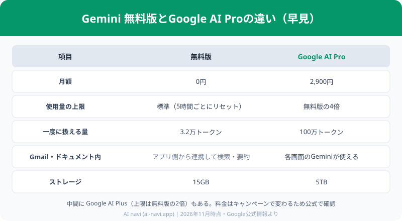

Geminiが気になっているけど、ChatGPTと何が違うのか、どこから始めればいいのかがよくわかりません。
GmailやGoogleドキュメントをふだん使っているなら、Geminiは相性がいい選択肢です。始め方は数分で終わるので、まずは手順どおりにログインして、身近な質問から試してみてください。
Geminiとは？できることをざっくり把握
Gemini（ジェミニ）は、Googleが提供する対話型のAIアシスタントです。質問に答える、文章を書く、資料を要約する、写真の内容を説明するといった使い方ができます。
ほかのAIと比べたときの特徴は、GmailやGoogleドキュメント、ドライブ、カレンダーなどGoogleのサービスとつながる点です。「先週届いた見積もりメールの金額は？」のように、自分のメールや資料の中身を探して答えさせることもできます。
| できること | 使い方の例 |
|---|---|
| 質問・調べもの | 言葉の意味、手続きの流れ、旅行の計画などを質問する |
| 文章作成 | メールの下書き、ブログの構成案、挨拶文を作る |
| ファイルの要約 | PDFや資料をアップロードして要点をまとめる |
| 写真の質問 | 植物の名前、手書きメモの文字起こし、グラフの読み取り |
| Googleサービス連携 | Gmail・ドキュメント・ドライブ・カレンダーの情報を検索・要約 |
Geminiの評判や他のAIとの性能比較は「Gemini評判・口コミ」、ChatGPT・Claudeとの使い分けは「ChatGPT・Gemini・Claude比較」で解説しています。この記事は操作手順に絞って進めます。
Geminiの始め方【スマホ・PC】
必要なのはGoogleアカウントだけです。Gmailを使っている方は、そのアカウントでそのまま始められます。
スマホ（iPhone・Android）で始める手順
- アプリを入れる：App Store（iPhone）またはGoogle Play（Android）で「Gemini」と検索し、提供元がGoogleの公式アプリをインストールする
- ログインする：アプリを開き、Googleアカウントを選んでログインする
- 話しかける：画面下の入力欄に質問を書いて送信する。マイクのアイコンから音声でも入力できる
Androidでは、端末の設定によってはアシスタントとしてGeminiを呼び出せます。スマホは外出先でのちょっとした調べものや、カメラで撮った写真について質問したいときに便利です。
PC（ブラウザ）で始める手順
- サイトを開く：Chrome・Edge・Safariなどのブラウザで gemini.google.com にアクセスする
- ログインする：右上の「ログイン」からGoogleアカウントでログインする
- 入力して送信：画面中央の入力欄に指示を書いて送信する
ウェブ版は一部の機能ならログインしなくても試せますが、会話の保存やGoogleサービスとの連携にはログインが必要です。長い文章の作成や資料の要約は、画面の広いPCのほうが作業しやすいでしょう。
会社のアカウントで使う場合：仕事用・学校用のGoogleアカウントでは、組織の管理者がGeminiや連携機能を有効にしている必要があります。メニューが表示されないときは、社内の管理者に確認しましょう。
基本の使い方｜質問・ファイル・写真・音声
1. 文章で質問する
入力欄に質問や依頼を書いて送信するのが基本です。答えが長すぎる・難しいと感じたら「中学生にもわかるように」「3行で」と続けて頼むと、同じ会話のまま言い直してくれます。
2. ファイルをアップロードして要約する
入力欄の「＋」アイコンからPDFや文書ファイルを追加し、「この資料の要点を箇条書きで5つ」と指示します。無料版は一度に扱える量が3.2万トークンまでなので、長い資料は章ごとに分けて渡すと抜け漏れが減ります。
3. 写真について質問する
スマホならカメラで撮った写真、PCなら画像ファイルを添付して質問できます。「この料理のレシピを考えて」「このグラフから読み取れることは？」など、文字では説明しにくい内容を聞くときに役立ちます。
4. 音声で話しかける
マイクのアイコンを押して話すと、そのまま文字に変換されて送信されます。スマホアプリでは、音声のまま会話を続けるモードも用意されています。手がふさがっているときや、考えを整理しながら話したいときに便利です。
5. 会話を管理する
過去の会話は画面左（スマホはメニュー）の一覧から開き直せます。話題が変わるときは新しいチャットを始めたほうが、前の内容に引きずられない回答になります。
Geminiの答えにも間違いは混ざります。金額・日付・制度の条件など、間違えると困る情報は、回答の根拠を聞いたうえで公式サイトでも確かめる習慣をつけておくと安心です。
Gmail・Googleドキュメントと連携する使い方
Geminiならではの使い方が、Googleのサービスとの連携です。Geminiの画面からGmail・ドキュメント・ドライブ・カレンダーなどの中身を検索したり、要約したりできます。
連携の準備（最初に1回だけ）
- GmailやドキュメントとGeminiで同じGoogleアカウントにログインする
- Geminiの設定でアプリの履歴（アクティビティ）をオンにする（オフだと連携できない）
- Gmailの設定で「他のGoogleサービスのスマート機能」をオンにし、Geminiを再読み込みする
- 未接続の場合に表示される接続の案内に従って、Workspaceを接続する
連携した状態での質問のしかた
入力欄で 「@」を入力すると、Gmail・ドキュメント・ドライブなどのサービス一覧が出るので、使いたいものを選んでから質問します。「Gmail」「ドキュメント」といった言葉をプロンプトに含めるだけでも指定できます。新しい会話を始めるたびに、サービス名を1回入れるのがポイントです。
公式ヘルプでは、メールや文書のURLを貼るのではなく、サービス名・種類・キーワードで探させるよう案内されています。
| やりたいこと | プロンプト例 |
|---|---|
| メールを探す | @Gmail 〇〇株式会社から届いた見積もりのメールで、合計金額と納期を教えて |
| 未読をまとめる | @Gmail 今週届いたメールのうち、返信が必要そうなものを一覧にして |
| 資料を要約 | @ドキュメント 「新商品企画」に関するドキュメントを探して、要点を5つの箇条書きにして |
| ファイルを探す | @ドライブ 最新の賃貸契約書を探して、更新料の金額を確認して |
| 予定の確認 | @カレンダー 来週の空いている時間帯を教えて |
※公式ヘルプによると、ドキュメントやGmail内のコメント・画像の内容は読み取れません。
GmailやドキュメントのなかでGeminiを使う（有料プラン）
ここまでの方法は「Geminiの画面からGoogleのサービスを見に行く」使い方です。これとは別に、Gmailやドキュメントを開いた画面の中でGeminiを呼び出し、メールの返信文や文書の下書きをその場で作る機能があります。こちらはGoogle AI PlusやGoogle AI Proなどの有料プランに含まれる機能として案内されています（2026年11月時点）。
仕事・日常で使える活用例とプロンプト
Geminiの使いみちが思いつかないときは、次のような場面から試してみてください。
仕事での活用例
- メールの下書き：「取引先に納期の延長をお願いするメールを、丁寧すぎない文面で」
- 資料の要約：PDFを添付して「上司に報告するために、結論と数字だけを3行で」
- 会議の準備：「明日の打ち合わせで確認すべき論点を5つ挙げて」
- 議事録の整理：文字起こしを貼り付けて「決定事項・担当者・期限を表にして」
会議の録音から議事録まで：Geminiに議事録を整理させるには、まず会話を文字にする必要があります。NottaのようなAI文字起こしツールで録音をテキスト化し、その文章をGeminiに渡して決定事項を抜き出す、という分担にすると手作業がぐっと減ります。
日常での活用例
- 献立づくり：冷蔵庫の中の写真を添付して「この食材で作れる夕食を3案」
- 旅行の計画：「2泊3日で京都。移動は電車、予算は1人4万円で行程を組んで」
- 学習：「この英文を訳して、使われている文法を解説して」
- 手続きの確認：「引っ越しで必要な役所の手続きをチェックリストにして」（制度の詳細は自治体の公式情報で確認）
SNS画像や資料のデザインを仕上げたいとき
Geminiで考えたキャッチコピーや構成案を、そのままSNS画像やチラシに仕上げたい場合は、デザインツールと組み合わせるのが効率的です。MiriCanvasなら、テンプレートに文章を流し込むだけで見栄えのいいデザインになり、無料で始められます。
スポンサー
無料版と有料版（Google AI Pro）の違い
Geminiは無料のままでも基本的な機能を使えます。有料プランに切り替えると、主に「使える量」と「Googleサービスの中での使い勝手」が変わります。

| 項目 | 無料版 | Google AI Plus | Google AI Pro |
|---|---|---|---|
| 月額 | 0円 | 公式で確認（キャンペーンで変動） | 2,900円 |
| 使用量の上限 | 標準 | 無料版の2倍 | 無料版の4倍 |
| 一度に扱える量 | 3.2万トークン | 12.8万トークン | 100万トークン |
| Gmail・ドキュメント内のGemini | — | Gmailなどで利用可 | Gmail・ドキュメントなどで利用可 |
| ストレージ | 15GB | 400GB | 5TB |
※2026年11月時点のGoogle公式情報をもとに作成。上位にGoogle AI Ultraもあります。上限や価格は予告なく変わることがあります。
使用量の上限と確認方法
公式ヘルプによると、使用量の上限は5時間ごとにリセットされます（週ごとの上限に達した場合を除く）。いまどれくらい使ったかは、gemini.google.com の設定アイコンから使用量上限の項目を開くと確認できます。有料プランで上限に達した場合は、軽量なモデルで会話を続けられます。
無料版でどこまで使えるか、上限に当たったときの具体的な対処は「Gemini無料版の制限まとめ」で詳しく解説しています。
有料にするか迷ったときの目安
- 1日に何度も上限の表示が出て、作業が止まる
- 長いPDFや大量の資料をまとめて読み込ませたい
- Gmailやドキュメントの画面の中で、返信や下書きを作りたい
- Googleドライブやフォトの容量がそもそも足りていない
どれにも当てはまらないなら、無料版のままで十分です。
よくある質問
まとめ
まずは無料版で、ふだんの調べものとGmail連携の2つを試すのがおすすめです。上限の表示が頻繁に出るようになったら、そのとき初めて有料プランを比べれば遅くありません。
GeminiはGoogleアカウントがあればすぐ使い始められるAIです。スマホはアプリ、PCはブラウザからログインするだけで、質問・要約・写真の質問・音声入力まで無料で試せます。
Geminiの使い方のポイント
- 始め方：スマホは公式アプリ、PCは gemini.google.com からGoogleアカウントでログイン
- 基本操作：文章・ファイル・写真・音声で質問できる。話題が変わったら新しいチャットに
- Google連携：履歴をオンにし、「@」でGmail・ドキュメント・ドライブを選んで質問
- 無料と有料の差：Google AI Pro（月額2,900円）は上限4倍・100万トークン・Gmailやドキュメント内で利用可
- 上限：5時間ごとにリセット。週ごとの上限もある
参考：
Google「Gemini サブスクリプション（料金プラン）」
Geminiアプリ ヘルプ「Google AI のサブスクリプション プランに応じた使用量上限」
Geminiアプリ ヘルプ「Google Workspace アプリとの接続」
Geminiアプリ ヘルプ「Gemini アプリの利用要件」
※料金・上限・機能は2026年11月時点の情報です。最新の内容は公式サイトでご確認ください。